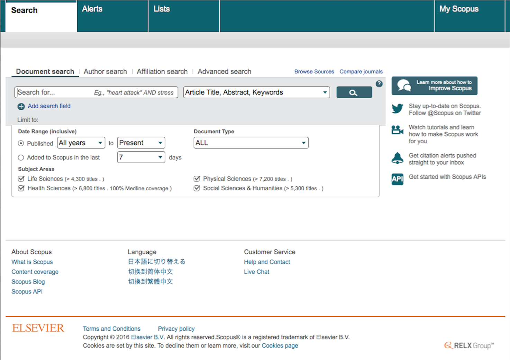

Actividades
- Conocer la base de datos SCOPUS.
- Desde el motor de búsqueda de tu elección.
- Desde el sitio de la DGB, UNAM.
- NO puedes descargar el texto gratuitamente a través de la DGB.
- El texto que buscas NO está en el catálogo de convenio con la UNAM.
- Escribe tu nombre de usuario y contraseña.
- Ahora vamos a la sección de 'Catálogos', de ahí a 'Bases de datos'.
- Escribe SCOPUS y selecciona la opción buscar por 'Nombre de la base'.
- Se abrirá una pantalla como la que se muestra a continuación.
- ¿Qué es SCOPUS?
- ¿Cuáles son sus objetivos?
- ¿Qué tipo de información provee?
- Identificar sus componentes principales y el tipo de información que contiene.
- Identificar los métodos de búsqueda idóneos para este sitio.
- ¿Cuáles son los criterios de búsqueda de información en esta base de datos?
- ¿Qué lenguas puedes usar en esta base de datos?
- ¿Qué operadores para la búsqueda reconoce?
- ¿Qué signos de puntuación puedes usar para refinar la búsqueda?
- ¿Puedes usar signos de truncamiento?
- ¿Reconoce el uso de mayúsculas y minúsculas?
- ¿Cuáles son las 4 grandes áreas en las que se organizan los archivos en SCOPUS?
- Conceptualizar la estructura y forma de organización de los recursos en SCOPUS.
- Formas de acceso a la base de datos.
- Organización y estructura.
- Tipo de información que contiene.
- Criterios de búsqueda que se pueden usar.
- Algún dato que te parezca relevante.
Hay dos formas de ingresar a SCOPUS:
La segunda opción es MUY conveniente porque te da acceso a miles de artículos de divulgación de las ciencias y también de tipo científico SIN tener que pagar por ellos. ¡Increíble! Sí tú puedes leer y descargar gratuitamente miles de textos almacenados en SCOPUS gracias a que eres profesor o estudiante de la UNAM. El formato de estos textos es PDF y tiene la inscripción 'free access through UNAM'.Esta opción es la que usaremos para nuestra sesión de hoy.
NOTA: Sin embargo, nos gustaría sugerirte que uses la primera opción en los siguientes casos:
Cuando consultamos SCOPUS directamente desde un motor de búsqueda, podemos recuperar todos los textos almacenados allí, pero en la mayoría de las ocasiones, habrá que cubrir un costo por descargarlos o por leerlos completos.
Así que vamos a ingresar a SCOPUS desde el sitio de la DGB.
Ingresa a: Dirección General de Bibliotecas UNAM
Abre un Google Doc desde tu drive y titúlalo 'APELLIDO.Sesión 5.'
Actividad 5.1 Escribe tus respuestas a las siguientes preguntas:
Ahora da click en la opción 'Acceso por ELSEVIER (cubre desde 1960)' Se abrirá la ventana de acceso a SCOPUS para usuarios de la UNAM.
Actividad 5.2 En el mismo documento, contesta las siguientes preguntas:
Actividad 5.3 Ahora realiza búsquedas específicas para recuperar información que será de utilidad para desarrollar tu trabajo final del Taller:
En el mismo documento, anota los datos completos de tres textos recuperados de SCOPUS vía DGB.
Actividad 5.4 Ahora vamos a realizar una actividad que nos permita recordar los rasgos más importantes y distintivos de cada metabuscador y base de datos que consultemos en este Taller. Elabora un mapa mental o un cuadro sinóptico, lo que prefieras, para representar en forma concreta y gráfica los siguientes puntos de SCOPUS: